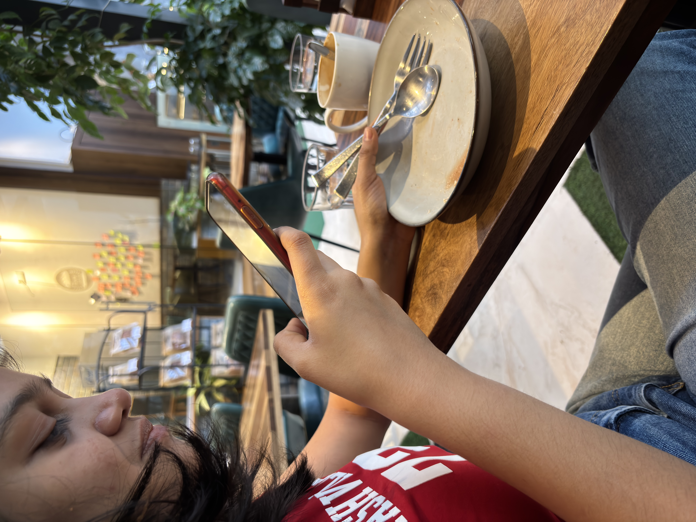
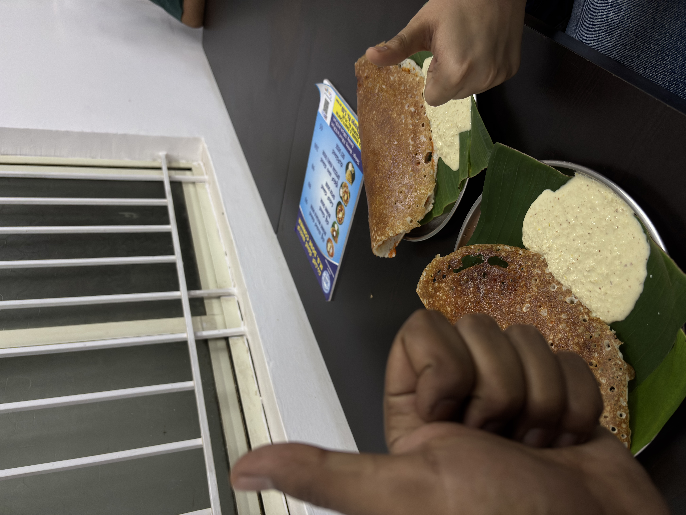
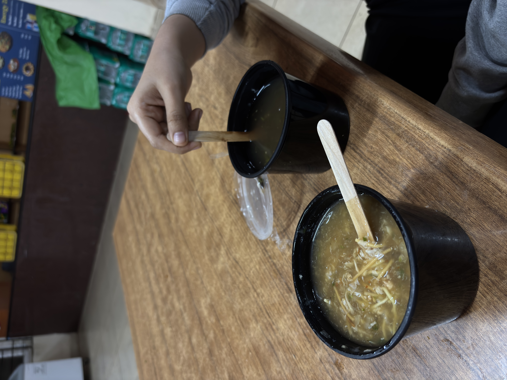
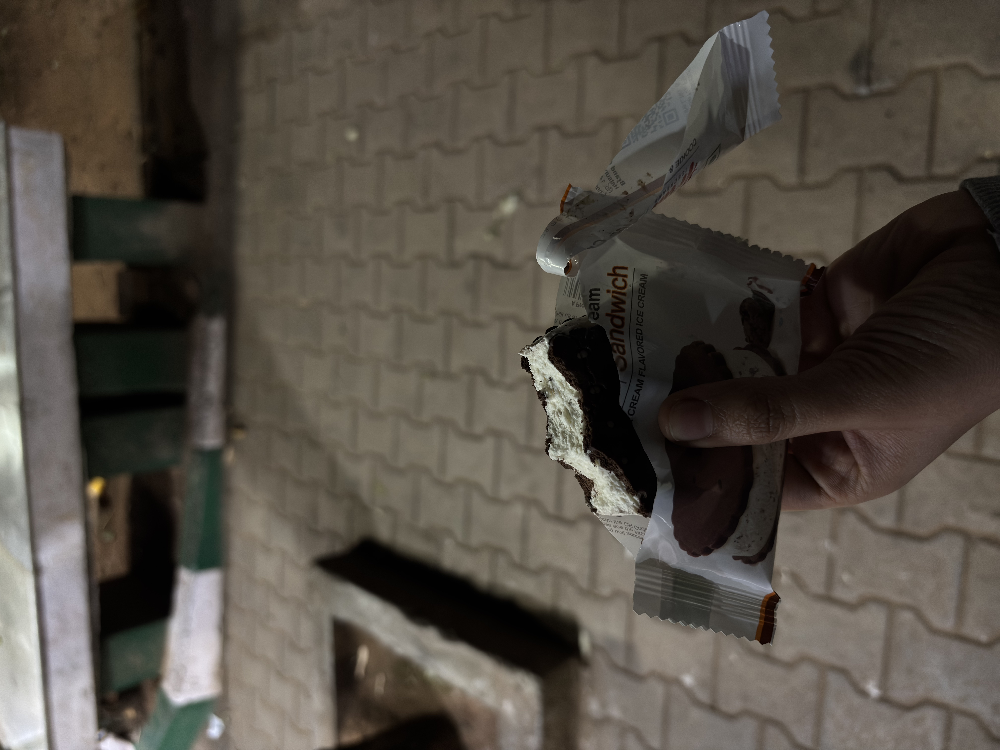
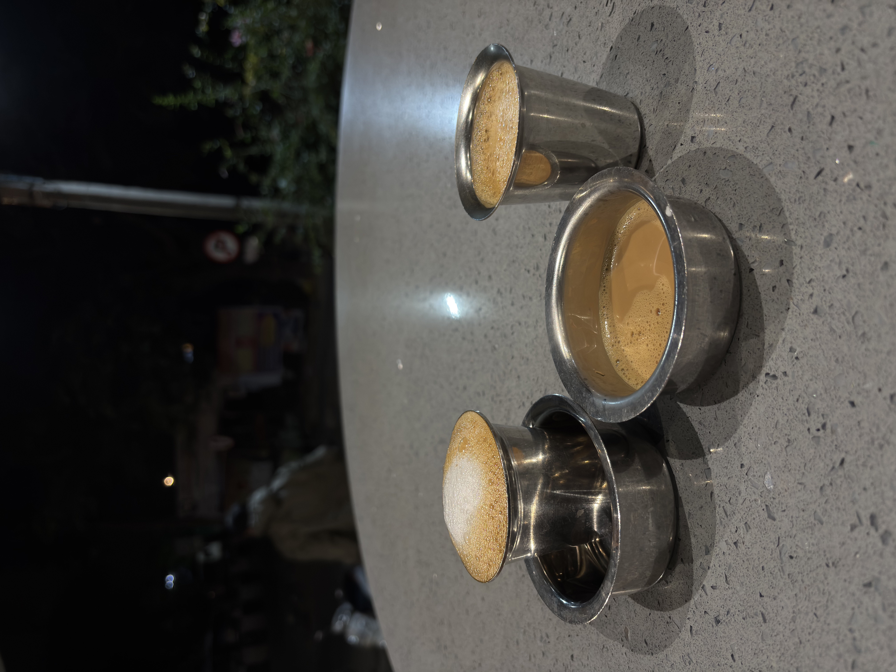
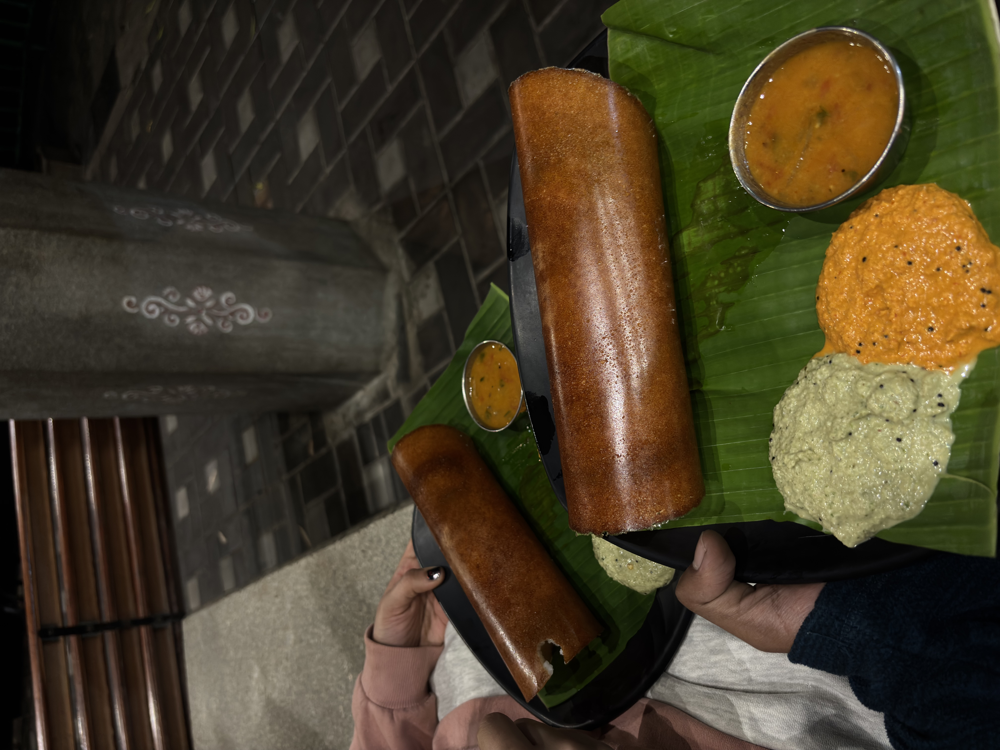
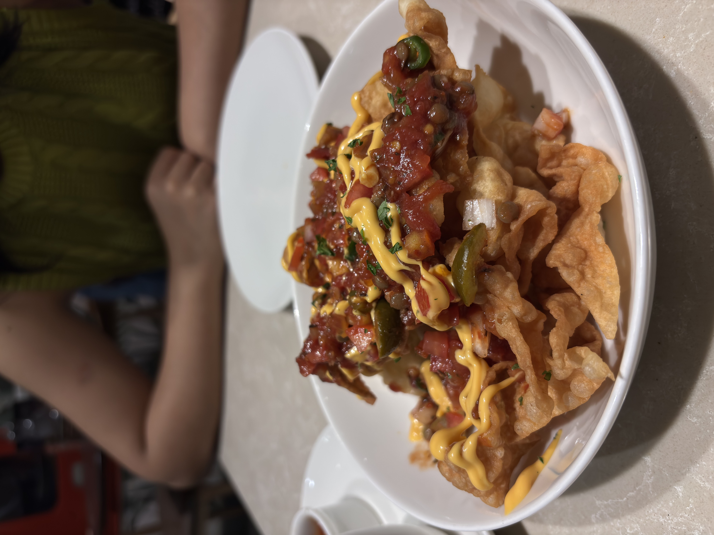
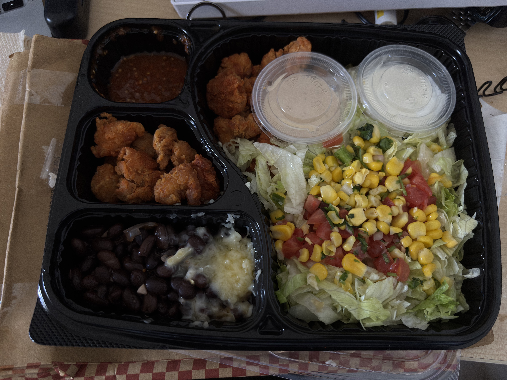
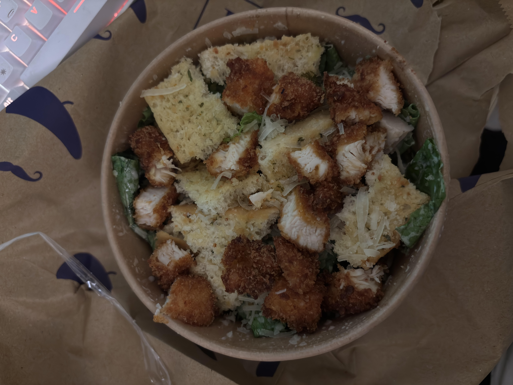
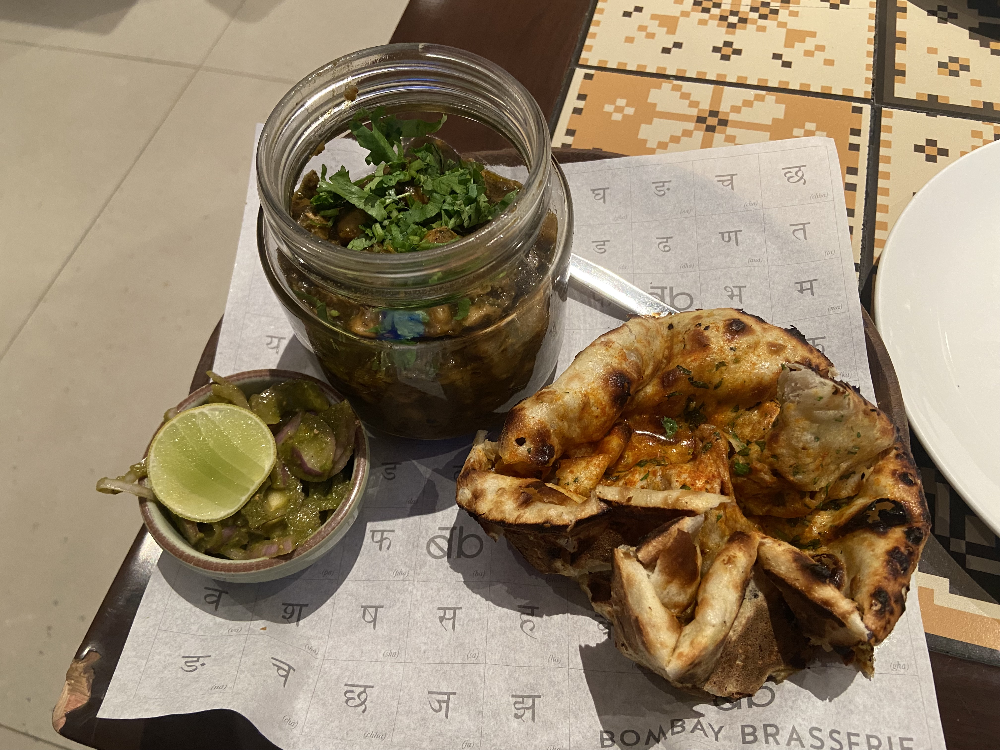

Spontaneous Diet Challenge
Riddhi and I were grabbing our usual coffee at Flour Affair when this woman ordered a watermelon feta salad. It had only 10 calories! Naturally, I asked, “Why, oh why?” Then, two monkey brains decided to go on a fruit diet for a week. Here’s us, officially committing to it, of course, by taking a picture.

Then, the idea of blogging our entire week-long diet came up, along with figuring out the rules. Here’s what we decided
- Our diet will mainly be fruits and salads.
- We can have some protein (because we’re not stupid!).
- We can’t have direct sources of carbs. We can have carbs if the main food source isn’t carbs.
- We can have dairy and dark chocolate. Cause we both can’t live without coffee and chocolates.
We had a few dates and a banana each in the evening. We spontaneously had a Benne Masala Dosa (remember rule 3, we’re not breaking any rules!).

Then, we had a Latte, a citrus tea, and ginger tea later. Cause we can’t live without our caffeine. We came back to our rooms and she had dark chocolate and some stuff from her home (remember rule 4, we’re not breaking any rules!). At 2 a.m., I felt a little sick and cold, so we ordered a chicken manchow and lemon pepper soup.

The lemon pepper soup was so spicy that we forgot about our diet and bought an ice cream sandwich. After taking a bite each, we remembered what we were doing and threw the whole thing away. Here’s a picture of a half-eaten ice cream sandwich.

Day 1 is done. See you guys tomorrow!
- Sayak and Riddhi
Three Days of Chaos
Day - 2
Someone who’s reading this now tricked me into eating two candies in the morning. Looking back, I probably shouldn’t have fallen for that. We had coffee and a banana each at Sarvam. In the evening, we each had an apple. For dinner, Riddhi got a paneer salad, and I had a Caesar Salad.
Now, the days are starting to blur because we barely slept.
Day - 3?
I took a little nap, but she didn’t. After a couple of breakdowns, we went for breakfast at Rameshwaram Cafe at 4:30 a.m. The place wasn’t open, so we sat and watched their whole morning routine (it was funny and weird at the same time). We had coffee and a benne masala dosa.


After this, quite a few things unfolded! We enjoyed bananas together while sipping tea separately. Around 4:30 p.m., we headed to get momos. We shared a veggie fried momo (things took a turn for the worse from here).
Then, something amazing happened, and we had to celebrate, so we went back to where it all began—Flour Affair—and indulged in a ginger honey cake and a mixed berry smoothie. Our celebrations weren’t quite over yet. We went out for dinner later that night. We had the dish in the picture along with mac and cheese balls. We also had a bit of wine, and I had a beer. We wrapped up the day with a huge serving of tiramisu. Then, we both slept for a long time.

Day - 4
We started the day late with a coffee. She had a masala dosa for brunch. I had a crispy chicken salad for lunch. We also shared three sticks of Kit-Kat. Then, we went for coffee, and I had a classic cold while she had a cookies and cream milkshake.
I went to the lab for a meeting and my supervisor’s birthday, so I had a very bad walnut eggless weird chocolate cake there. For dinner, she went out and had chole-bhature with a glass of wine. I had a chicken Caesar Salad. (I had one more stick of Kit-Kat.) To end the day, I had an ice cream sandwich with two bites taken away from me by someone :’)



We still have three days left. In our minds, we know we’ve broken every rule we set for the challenge. But our hearts are still pure.
Cheers!
- Riddhi and Sayak